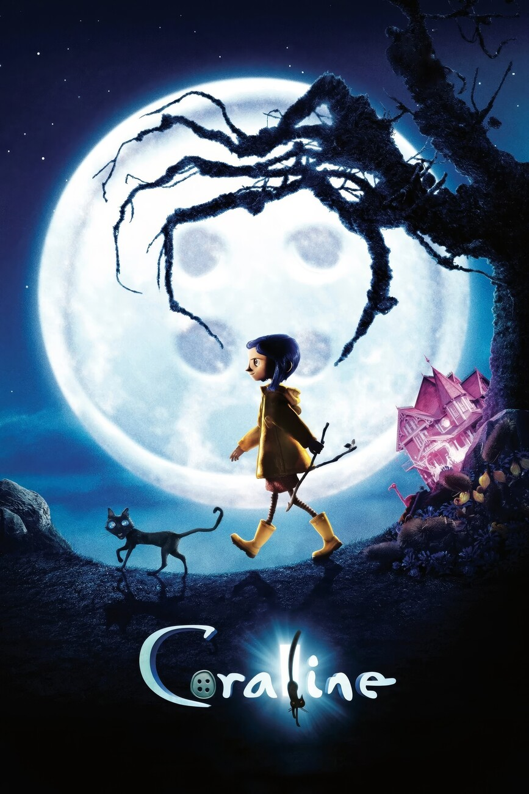

Los mundos de Coraline
Una de mis películas favoritas de animación es "Los mundos de Coraline". Es una película de fantasía oscura, horror y misterio. En mi opinión, es un ejemplo más de que la animación puede ser disfrutada por todos los públicos.
